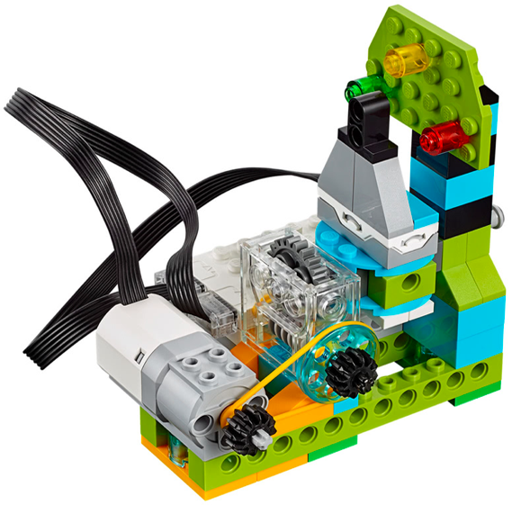
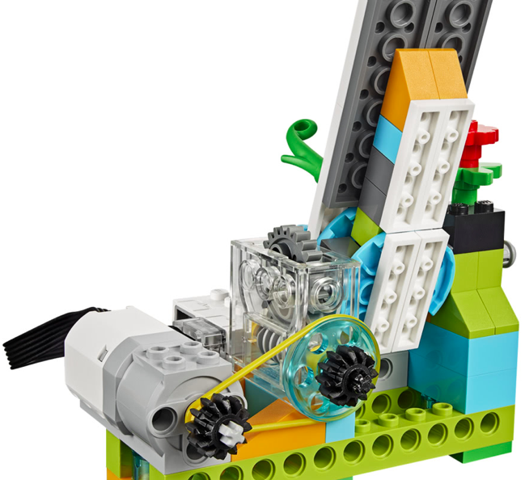

En este proyecto el alumno debe construir la base del los dos siguientes montajes. Debe hacer una serie
de retos iniciales para ver como se realiza el movimiento y como se traslada de un sitio a otro.
El primer montaje tiene las instrucciones para construir la parte de los engranajes. Este robot será la base
para los dos siguientes robots.
Los dos robots siguientes no tienen instrucciones y solo disponen de 3 fotos. Se construyen sobre la
base del montaje anterior.
El alumno debe aprender a utilizar la pieza transparente para la transmisión de movimiento perpendicular y el engranaje de tornillo sin fin.
• Hacer que el robot gire el mecanismo y de media vuelta.
• Hacer que el robot gire el mecanismo y de una vuelta entera.
• Repetir esperando el sonido de una palmada.

• Hacer que la flecha de la alarma pare en cada color.
• Repetir haciendo que haga sonidos dependiendo de el color en el que se encuentre la fecha.
• Repetir haciendo también que muestre imágenes dependiendo del color en el que se encuentre la flecha.

• Hacer que el puente realice la siguiente secuencia:
- Bajar el puente.
- Espera para hacer cruzar a la foca.
- Subir el puente.
{kind=link}
{kind=link}